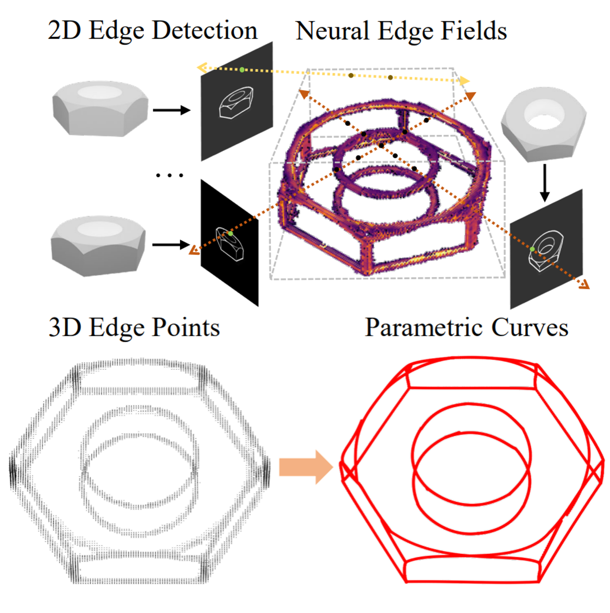

Zhifeng Wang+, Renjiao Yi+ , Xin Wen, Chenyang Zhu, Kai Xu
"VasTSD: Learning 3D Vascular Tree-state Space Diffusion Model for Angiography Synthesis", CVPR 2025.
Angiography imaging is a medical imaging technique that enhances the visibility of blood vessels within the body by using contrast agents. Angiographic images can effectively assist in the diagnosis of vascular diseases. However, contrast agents may bring extra radiation exposure which is harmful to patients with health risks. To mitigate these concerns, in this paper, we aim to automatically generate angiography from non-angiographic inputs, by leveraging and enhancing the inherent physical properties of vascular structures. Previous methods relying on 2D slice-based angiography synthesis struggle with maintaining continuity in 3D vascular structures...
Arxiv
Xin Wen, Xuening Zhu, Renjiao Yi* , Zhifeng Wang, Chenyang Zhu & Kai Xu*,
"CAD-NeRF: learning NeRFs from uncalibrated few-view images by CAD model retrieval", Frontiers of Computer Science.
Reconstructing from multi-view images is a longstanding problem in 3D vision, where neural radiance fields (NeRFs) have shown great potential and get realistic rendered images of novel views. Currently, most NeRF methods either require accurate camera poses or a large number of input images, or even both. Reconstructing NeRF from few-view images without poses is challenging and highly ill-posed. To address this problem, we...
Link
Zhirui Gao+, Renjiao Yi+ , Chenyang Zhu, Ke Zhuang, Wei Chen, Kai Xu
"Generic objects as pose probes for few-shot view synthesis", IEEE Transactions on Circuits and Systems for Video Technology.
Radiance fields, including NeRFs and 3D Gaussians, demonstrate great potential in high-fidelity rendering and scene reconstruction, while they require a substantial number of posed images as input. COLMAP is frequently employed for preprocessing to estimate poses. However, COLMAP necessitates a large number of feature matches to operate effectively, and struggles with scenes characterized by sparse features, large baselines, or few-view images. We aim to...
Arxiv
Xuening Zhu+, Renjiao Yi+ , Xin Wen, Chenyang Zhu, Kai Xu
"Relighting scenes with object insertions in neural radiance fields", IEEE Transactions on Circuits and Systems for Video Technology.
Inserting objects into scenes and performing realistic relighting are common applications in augmented reality (AR). Previous methods focused on inserting virtual objects using CAD models or real objects from single-view images, resulting in highly limited AR application scenarios. We introduce a novel pipeline based on Neural Radiance Fields (NeRFs) for seamlessly integrating...
Arxiv
Yunfan Ye, Kai Xu, Yuhang Huang, Renjiao Yi , Zhiping Cai,
"DiffusionEdge: Diffusion Probabilistic Model for Crisp Edge Detection", AAAI 2024.
Limited by the encoder-decoder architecture, learning-based edge detectors usually have difficulty predicting edge maps that satisfy both correctness and crispness. With the recent success of the diffusion probabilistic model (DPM), we found...
Arxiv
Yao Duan, Renjiao Yi ,Yuanming Gao, Kai Xu, Chenyang Zhu,
"EFECL: Feature encoding enhancement with contrastive learning for indoor 3D object detection", Computational Visual Media (CVMJ).
Good proposal initials are critical for 3D object detection applications. However, due to the significant geometry variation of indoor scenes, incomplete and noisy proposals are inevitable in most cases. Mining feature informatio...
pdf
Minhao Li, Zheng Qin, Zhirui Gao, Renjiao Yi, Chenyang Zhu, Yulan Guo, Kai Xu,
"2D3D-MATR: 2D-3D Matching Transformer for Detection-free Registration between Images and Point Clouds", ICCV 2023.
The commonly adopted detect-then-match approach to registration finds difficulties in the cross-modality cases due to the incompatible keypoint detection and inconsistent feature description. We propose, 2D3D-MATR, a detectionfree method for...
pdf
Yunfan Ye, Renjiao Yi (co-first author), Zhiping Cai, Kai Xu,
"STEdge: Self-training Edge Detection with Multi-layer Teaching and Regularization", IEEE Transactions on Neural Networks and Learning Systems (TNNLS).
Learning-based edge detection has hereunto been strongly supervised with pixel-wise annotations which are tedious to obtain manually. We study the problem of self-training edge detection, leveraging the untapped wealth of large-scale unlabeled image datasets. We design a self-supervised framework with multi-layer regularization and self-teaching...
Arxiv (with supplementary material)
Yunfan Ye, Renjiao Yi, Zhirui Gao, Zhiping Cai, Kai Xu,
"Delving into Crispness: Guided Label Refinement for Crisp Edge Detection", IEEE Transactions on Image Processing.
Learning-based edge detection usually suffers from predicting thick edges. Through extensive quantitative study with a new edge crispness measure, we find that noisy human-labeled edges are the main cause of thick predictions. Based on this observation, we advocate that more attention should be paid on label quality than on model design to achieve crisp edge detection. To this end, we propose an effective ...
PDF
Hui Tian, Zheng Qin, Renjiao Yi, Chenyang Zhu, Kai Xu,
"Tensorformer: Normalized Matrix Attention Transformer for High-quality Point Cloud Reconstruction", IEEE Transactions on Multimedia.
Surface reconstruction from raw point clouds has been studied for decades in the computer graphics community, which is highly demanded by modeling and rendering applications nowadays. Classic solutions, such as Poisson surface reconstruction, require point normals as extra input to perform reasonable results. Modern transformer-based methods can work without normals, while the results are less fine-grained due to limited encoding performance in local fusion from discrete points. We introduce ...
PDF
Renjiao Yi*, Chenyang Zhu*, Kai Xu,
"Self-supervised Non-Lambertian Single-view Image Relighting", CVPR 2023 (*Co-first authors).
We present a learning-based approach to relighting a single image of non-Lambertian objects. Our method enables inserting objects from photographs into new scenes and relighting them under the new environment lighting, which is essential for AR applications. To relight the object, we solve both inverse rendering and re-rendering. To resolve the ill-posed inverse rendering, we propose a self-supervised method by ...
PDF Project Page

Yunfan Ye, Renjiao Yi, Zhirui Gao, Chenyang Zhu, Zhiping Cai, Kai Xu,
"NEF: Neural Edge Fields for 3D Parametric Curve Reconstruction from Multi-view Images", CVPR 2023.
We study the problem of reconstructing 3D feature curves of an object from a set of calibrated multi-view images. To do so, we learn a neural implicit field representing the density distribution of 3D edges which we refer to as Neural Edge Field (NEF). Inspired by NeRF, NEF is optimized with a view-based rendering loss where a 2D edge map is rendered at a given view and is compared to the ground-truth edge map extracted from the image of that view ...
PDF Project Page
Yaqiao Dai*, Renjiao Yi*, Chenyang Zhu, Hongjun He, Kai Xu,
"Multi-resolution Monocular Depth Map Fusion by Self-supervised Gradient-based Composition", AAAI 2023 Oral presentation (*Co-first authors).
Monocular depth estimation is a challenging problem on which deep neural networks have demonstrated great potential. However, depth maps predicted by existing deep models usually lack fine-grained details due to the convolution operations and the down-samplings in networks. We find that increasing input resolution is helpful to preserve more local details while the estimation at low resolution is more accurate globally. Therefore, we propose a novel depth map fusion module to combine the advantages of estimations with multi-resolution inputs...
PDF Codes

Zhirui Gao, Renjiao Yi, Zheng Qin, Yunfan Ye, Chenyang Zhu, Kai Xu,
"Learning Accurate Template Matching with Differentiable Coarse-to-fine Correspondence Refinement", Computational Visual Media (CVMJ).
Template matching is a fundamental task in computer vision and has been studied for decades. It plays an essential role in the manufacturing industry for estimating the poses of different parts, facilitating downstream tasks such as robotic grasping. Existing works fail when the template and source images are in different modalities, cluttered backgrounds or weak textures...
PDF
Chenyi Liu, Fei Chen, Lu Deng, Renjiao Yi, Lintao Zheng, Chenyang Zhu, Jia Wang, Kai Xu,
"6DOF Pose Estimation of a 3D Rigid Object based on Edge-enhanced Point Pair Features", Computational Visual Media (CVMJ).
The point pair feature (PPF) is widely used for 6D pose estimation. In this paper, we propose an efficient 6D pose estimation method based on the PPF framework...
PDF
Yuefeng Xi, Chenyang Zhu, Yao Duan, Renjiao Yi, Lintao Zheng, Hongjun He, Kai Xu,
"THP: Tensor-Field-Driven Hierarchical Path Planning for Autonomous Scene Exploration with Depth Sensors", Computational Visual Media (CVMJ).
It is challenging to automatically explore an unknown 3D environment with a robot only equipped with depth sensors due to the limited field of view. We introduce THP, a tensor field-based framework for efficient environment exploration...
PDF
Yao Duan, Chenyang Zhu, Yuqing Lan, Renjiao Yi, Xinwang Liu, Kai Xu,
"DisARM: Displacement Aware Relation Module for 3D Detection", CVPR 2022.
We introduce Displacement Aware Relation Module (DisARM), a novel neural network module for enhancing the performance of 3D object detection in point cloud scenes. The core idea of our method is that contextual information is critical to tell the difference when the instance geometry is incomplete or featureless. We find that relations between proposals provide a good representation to describe the context...
Arxiv

Renjiao Yi,
Ping Tan and Stephen Lin, "Leveraging Multi-view Image Sets for Unsupervised Intrinsic Image Decomposition and Highlight Separation", AAAI 2020.
We present an unsupervised approach for factorizing object appearance into highlight, shading, and albedo layers, trained by multi-view real images. To do so, we construct a multi-view dataset by collecting numerous customer product photos online, which exhibit large illumination variations that make them suitable for training of reflectance separation and can facilitate object-level decomposition...
Arxiv (with supplementary material) Poster Specularity separation dataset Bibtex
Renjiao Yi,
"Image Layer Separation and Application", PhD Thesis.
Image layer separation is an important step for image understanding and facilitates many image processing applications. It aims to separate a single image into multiple image layers, decomposing different components of the image. Image layers are either physics-based layers...
link PDF
Renjiao Yi, Chenyang Zhu,
Ping Tan and Stephen Lin, "Faces as Lighting Probes via Unsupervised Deep Highlight Extraction", ECCV 2018.
We present a method for estimating detailed scene illumination using human faces in a single image. In contrast to previous works that estimate lighting in terms of low-order basis functions or distant point lights, our technique estimates illumination at a higher precision in the form of a non-parametric environment map...
Arxiv (with supplementary material) Codes Poster Bibtex

Chenyang Zhu, Kai Xu, Siddhartha Chaudhuri, Renjiao Yi and Hao Zhang,
SCORES: Shape Composition with Recursive Substructure Priors", ACM Transactions on Graphics (SIGGRAPH Asia 2018).
We introduce SCORES, a recursive neural network for shape composition. Our network takes as input sets of parts from two or more source 3D shapes and a rough initial placement of the parts. It outputs an optimized part structure for the composed shape, leading to high-quality geometry construction. A unique feature of our composition network is that it is not merely learning how to connect parts. Our goal is to produce a coherent and plausible 3D shape...
Arxiv

Chenyang Zhu, Renjiao Yi,
Wallace Lira, Ibraheem Alhashim, Kai Xu and Hao Zhang, "Deformation-Driven Shape Correspondence via Shape Recognition", ACM Transactions on Graphics (SIGGRAPH 2017), 36(4): 51, 2017.
Many approaches to shape comparison and recognition start by establishing a shape correspondence. We "turn the table" and show that quality shape correspondences can be obtained by performing many shape recognition tasks. What is more, the method we develop computes a fine-grained, topology-varying part correspondence between two 3D shapes where the core evaluation mechanism only recognizes shapes globally...
PDF
Renjiao Yi, Jue Wang, Ping Tan , "Automatic Fence Segmentation in Videos of Dynamic Scenes", IEEE Conference on Computer Vision and Patten Recognition (CVPR), Las Vegas, USA, Jun. 2016.
We present a fully automatic approach to detect and segment fence-like occluders from a video clip. Unlike previous approaches that usually assume either static scenes or cameras, our method is capable of handling both dynamic scenes and moving cameras...
PDF Poster